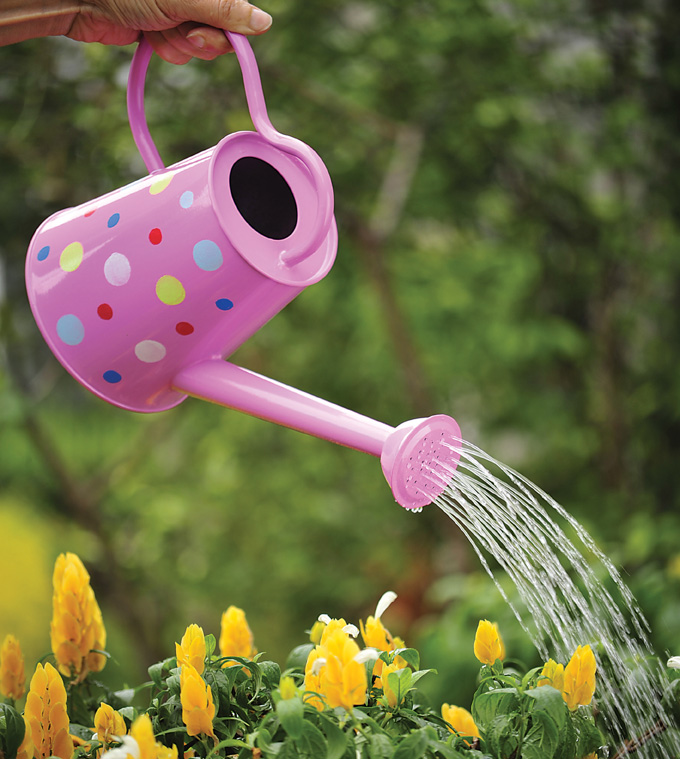
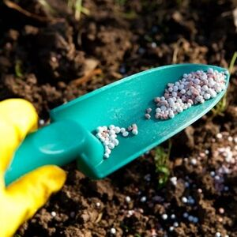

rosa do deserto
 inicio
inicio

um planta belissima
rosa do deserto é uma das plantas mais bonitas que exite seu caule grosso favorece ficar muito tempo sem água mais mesmo assim necessita de muitos cuidados

rosa do deserto é uma das plantas mais bonitas que exite seu caule grosso favorece ficar muito tempo sem água mais mesmo assim necessita de muitos cuidados
rosa do deserto é uma planta que necessita de muitas horas de sol. quando é criada em vaso é importante verificar se ela etá recebendo sol se não a planta morrer.
A rosa do deserto é uma planta que necessita de pouca água então em tempos chuvosos é recomendado que se coloque em um lugar coberto
o regador é muito importante para ter um solo sempre húmido só tenha cuidado de escolher um regador adequado para o tamanho de sua rosa
a pazinha de jardim é um iten essencial para cuidar da rosa porque te auxilia na hora de colocar o adubo e tambem na hora do transplante. tipo e o estilo da pazinha pode ser da sua preferencia

a tesoura de poda também é um iten muito importante para cuidar da rosa do deserto porque a rosa de tempos e tempos precisa ser poudada mais na hora da pouda tome bastante cuidado se não você pode matar a rosa caso tenha dúvida de como faz veja o link

adubo e fertilizante ajuda a planta sempre ficar forte e bonita use varios tipos de adubo tanto quimico quanto o orgânico só tenha cuidado na quantidade para mais informaçôes veja esse PDF baixe o PDF
